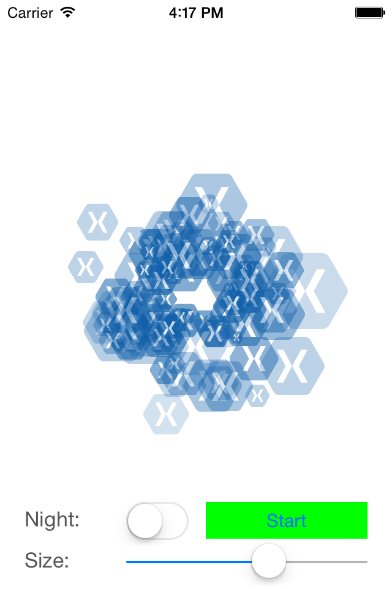
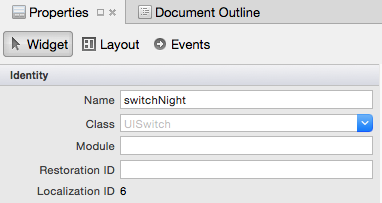
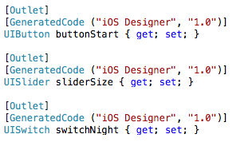

Duration
20 minutes
Goals
The primary goal of this lab will be to add behavior to our Views using the View Controller's code behind.
Required assets
This lab is a continuation of the previous exercise. You may use your project from exercise 02 or open the completed project in the Part 02 Resources folder. There are some resources that will be added to the project in the Infrastructure folder. And there is a completed version of the exercise in the Part 03 Resources folder if you'd like to compare your solution when you are finished.
Challenge
Add behavior to the controls you added in the previous exercises
- Open completed solution from the previous exercise.
- Add the SimpleParticleGen class and the xamlogo images from the Infrastructure folder.
- Open Main.storyboard.
- Assign names to the three interactive child views: Button -> "buttonStart", Switch -> "switchNight", and Slider -> "sliderSize".
- Set the switch's default state to off.
- Open ViewController.cs and create a class level SimpleParticleGen named fireworks. and go to the
- Go to
ViewDidLoadand instantiate fireworks using the xamlogo resources. - Use buttonStart's
TouchUpInsideevent handler to call the Start method of the particle generator. - Return to Main.storyboard.
- Assign event handlers from the storyboard for the switch and slider by double clicking.
- In ViewController.cs, add code to the switch's value changed partial method to change the background color of the view controller.
- Add code to the slider's value changed partial method and update the particle generator's ScaleMax public property.
ViewDidLoad method.
Steps
Below are the step-by-step instructions to implement the exercise.
Add Fireworks Logic and Resources
We're going to display fireworks in our application. To save time there's a simple particle generator class included in the Part 03 Resources -> Infrastructure folder.
- Add the SimpleParticleGen.cs file to your fireworks project.
- Add the 3 xamlogo png files to your project's Resources folder.
- Open ViewController.cs and add a class level reference to the SimpleParticleGen class you just added named fireworks.
- In the
ViewDidLoadmethod, instantiate the fireworks particle generator. For the first argument use theUIImage.FromFilemethod to load xamlogo.png, the second argument should be the View Controller's View (this.View), and use the center of the View Controller as the third parameter.
Assign names to the controls
In order to interact with our controls programmatically, we'll need a reference usable in the view controller's code. Assigning a name to the controls using the Xamarin.iOS designer will automatically provide this reference.
- Open Main.storyboard.
- Select the switch.
- In properties pane, set the switch's name to switchNight. 
- Set the button's name to buttonStart.
- Set the switch's default state to off: in the Properties pane in the Switch section, uncheck State.
- Set the slider's name to sliderSize.
- Open ViewController.designer.cs and inspect the generated Outlets. 
Show the fireworks (add behavior to the button)
Now that we've named the button, we can access it from the View Controller's code behind.
- Open ViewController.cs.
- In the
ViewDidLoadmethod, add a delegate to call the particle generator firework's Start method when the button is clicked. Remember, we use theTouchUpInsideEventHandler. - Run the application and press the Start button.
Add behavior to the switch
We can also use the designer to help us wire up events for UIKit controls.
- Open Main.storyboard.
- Double-click on the switch - this will take you to ViewController.cs.
- Select a location for the new event handler method and press enter/return.
- We can determine the switch's state by checking its Boolean On property. If the switch is on, set the View Controller's background color to a dark color, otherwise set it to white.
Add behavior to the slider
We'll wire up the value changed event handler using a third technique.
- Open Main.storyboard.
- Select the slider.
- In the Properties pane select the Events section.
- In the Value section, type in a method handler name for changed - SliderSize_ValueChanged.
- Save changes to the storyboard and then inspect ViewController.designer.cs - you should see a new partial method SliderSize_ValueChanged. You should also see the partial method sliderSize_ValueChanged.
- This time we'll have to create the body of our partial method ourselves. Open ViewController.cs and create a partial method for SliderSize_ValueChanged. Check the designer file to verify the signature.
- Set the fireworks' scaleMax property to sliderSize's Value. Hint: You'll need to cast the value to an
nfloat. - Run the app - verify that both the switch and slider work correctly.
- Think about which of the above three techniques you prefer - is one better than another?
Summary
In this lab you used three different techniques to add behavior to controls created using the Xamarin.iOS designer. You also made fireworks!